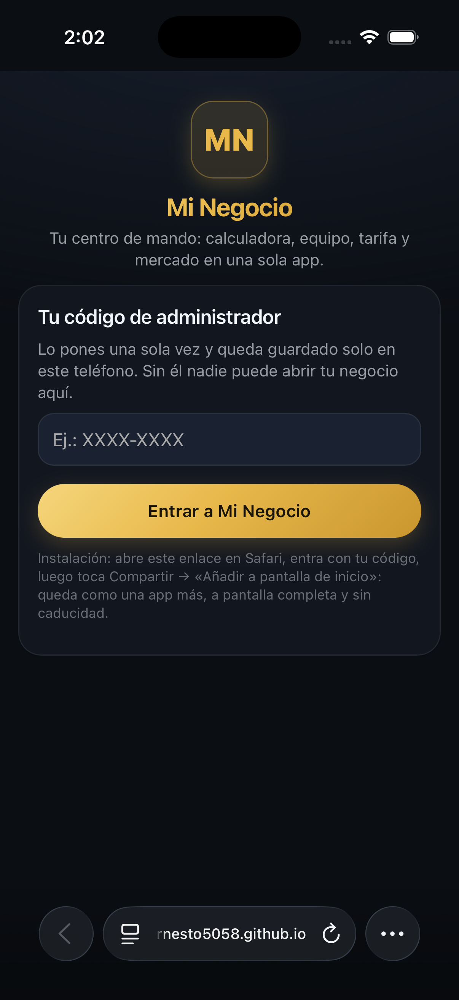
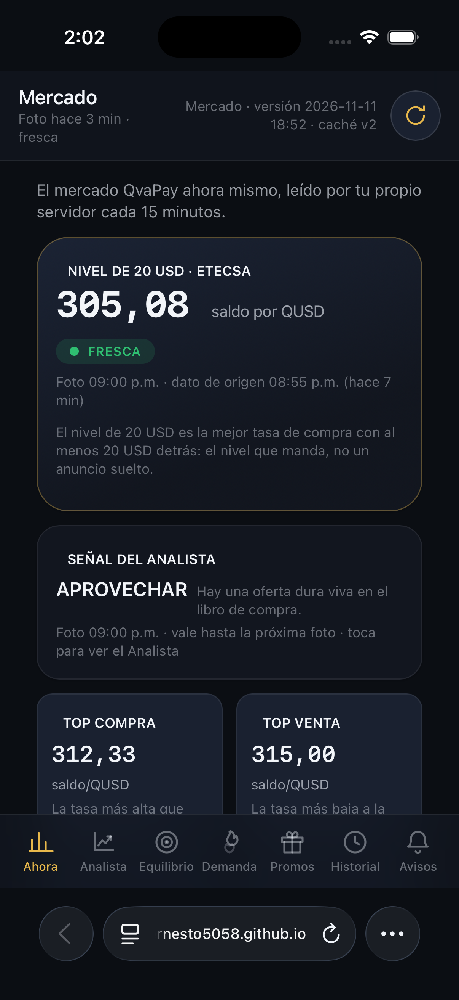
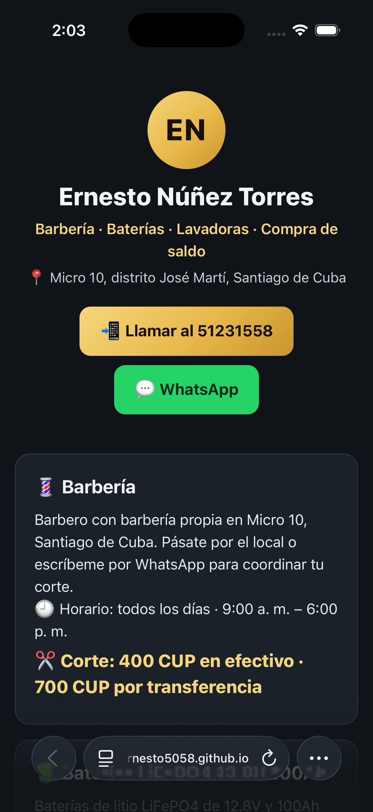
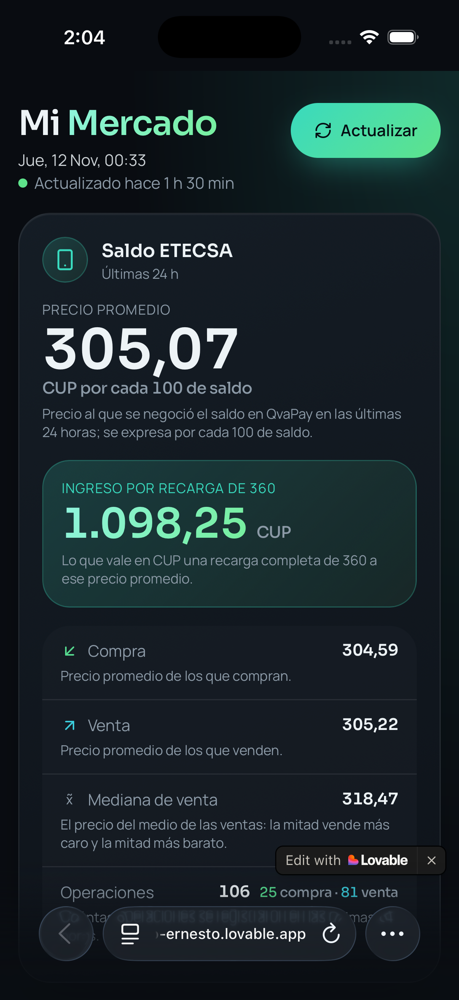

Fotos automáticas de cada web en el Safari de un iPhone simulado. #3FB96B (hora de Cuba).
VERDE
Simulador: iPhone 17 Pro con iOS 26.5 (la imagen del runner de GitHub de esta corrida). Se publican 4 de 4 fotos. OJO: este NO es el iPhone XR de Ernesto ni su iOS 18.7 — es el iPhone de mentira más nuevo que trae el servidor; sirve para ver Safari y el diseño, no sustituye su teléfono.

Mi Negocio en Safari — SOLO la puerta: el código del dueño no viaja a ningún robot.

Mercado en Safari — el panel del mercado QvaPay con sus datos en vivo.

La paginita en Safari — la tarjeta pública del negocio.

Mi Mercado (Lovable) en Safari — el conversor alimentado por los datos del vigía.
Alcance honesto: «Mi Negocio» se fotografía solo hasta su puerta — el código del dueño no viaja a ningún robot. Y este iPhone es de mentira: trae el iOS de la imagen del servidor de GitHub, no el 18.7 del XR de Ernesto; la prueba final sigue siendo su teléfono de verdad.